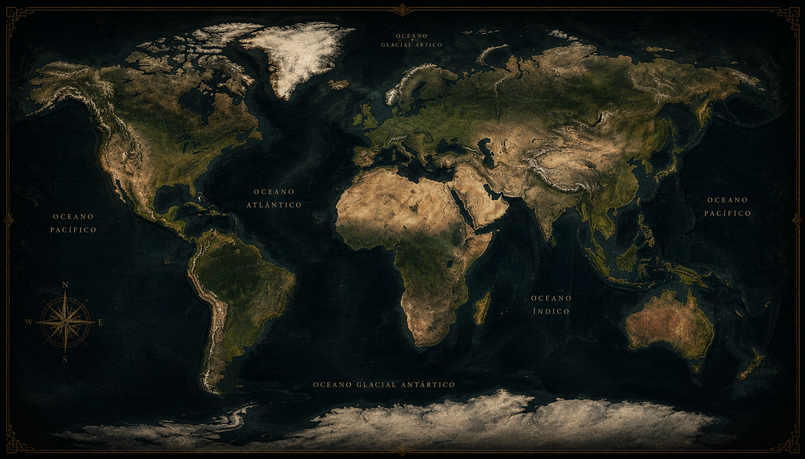

✦ ⊹ ✦
Lendas
Histórias, mistérios e memórias da humanidade.
Explore lendas antigas e modernas, conheça criaturas lendárias, heróis imortais e mistérios que atravessaram gerações, preservando a cultura e a imaginação dos povos.
Categorias de Lendas
Criaturas
Lendárias
Lendas
Urbanas
Lendas
Regionais
Lugares
Assombrados
Ritos e
Tradições
Lendas em Destaque
✦
Mapa das Lendas
✦Explore lendas de diferentes culturas ao redor do mundo.
